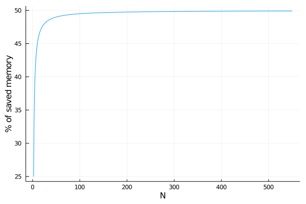
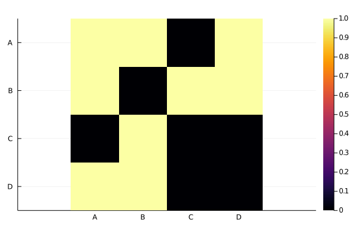

PairwiseListMatrices
Introduction
PairwiseListMatrices allows you to represent a (squared) symmetric matrix as a list of the values in the upper or lower triangular part of the matrix. Those matrices are common for representing pairwise measures/comparisons between the elements of one group when the used metric/distance satisfies the symmetry condition. Also the adjacency matrices of undirected graphs can be represented with this kind of list/matrices.
Installation
This package is registered on Julia's METADATA.jl and it can be installed through the Julia's REPL:
Pkg.add("PairwiseListMatrices")If the package is installed on your system, you can load it with:
using PairwiseListMatricesSimple example
The following symmetric matrix has 9 values. Their values could be thought as pairwise measures between 3 elements:
julia> matrix = [ 0 10 20
10 0 30
20 30 0 ]
3×3 Array{Int64,2}:
0 10 20
10 0 30
20 30 0Since all the diagonal members are zeros, this matrix could be represented as a vector/list of the 3 values on the triangular part:
julia> list = [10, 20, 30]
3-element Array{Int64,1}:
10
20
30The type PairwiseListMatrix, defined in this module, can be used for working with the list as a full symmetric matrix.
julia> using PairwiseListMatrices
julia> plm = PairwiseListMatrix(list)
3×3 PairwiseListMatrix{Int64,false,Array{Int64,1}}:
0 10 20
10 0 30
20 30 0Implementation
If you are performing pairwise measures over N elements, storing all the N*N values of a Matrix{T} represents sizeof(T)*(N*N) bytes of memory. However, the lower and upper triangular parts of the matrix are identical and could be stored in a single list. In this way, you are storing the green value only once:

The diagonal values should be stored, since they could change at any time (i.e. yellow value). So you need sizeof(T)*(N) bytes for storing the diagonal values on a vector and sizeof(T)*(N*(N-1))/2 bytes for storing the lower or upper triangular part of the matrix. The type PairwiseListMatrix{T, diagonal, VT} represents the symmetric matrix using only sizeof(T)*(N*(N+1))/2 bytes instead of sizeof(T)*(N*N) bytes, saving almost 50% of the memory (the percent depends on N):
using Plots
gr()
plot( 2:550,
N -> 100.0 - ( 100.0 * div(N*(N+1), 2) / (N*N) ),
xlab = "N",
ylab = "% of saved memory",
legend = nothing )
As you can see in the schematic diagram, the difference between PairwiseListMatrix{T, true, VT} and PairwiseListMatrix{T, false, VT} is where the diagonal values are stored. All PairwiseListMatrix{T, diagonal, VT} have a list field for storing the values. If diagonal is true, the diagonal values are included in the list (i.e. yellow value) and the diag vector is empty. But if the diagonal value is false the diagonal values are stored in the diag vector.
mutable struct PairwiseListMatrix{T,diagonal,VT} <: AbstractArray{T, 2}
list::VT
diag::VT
nelements::Int
...
endThe number of elements in the pairwise measure/comparisons or the number of nodes in the undirected graph is stored in nelements and used in indexing operations. This allows you to index the object like any other matrix.
The PairwiseListMatrix can be wrapped in a NamedArray (from the package NamedArrays) to allow the access of elements using labels. The function setlabel can be used to create this object easily. For example, using the matrix of the figure and storing the diagonal values in the list:
julia> using PairwiseListMatrices
julia> plm = PairwiseListMatrix([1,1,0,1,0,1,1,0,0,0], true)
4×4 PairwiseListMatrix{Int64,true,Array{Int64,1}}:
1 1 0 1
1 0 1 1
0 1 0 0
1 1 0 0
julia> nplm = setlabels(plm, ["A","B","C","D"])
4×4 Named PairwiseListMatrix{Int64,true,Array{Int64,1}}
A ╲ B │ A B C D
──────┼───────────
A │ 1 1 0 1
B │ 1 0 1 1
C │ 0 1 0 0
D │ 1 1 0 0
julia> nplm["B","C"]
1You can also create the matrix with the list without the diagonal values and fill the diagonal values after that:
julia> using PairwiseListMatrices
julia> plm = PairwiseListMatrix([1,0,1,1,1,0], false)
4×4 PairwiseListMatrix{Int64,false,Array{Int64,1}}:
0 1 0 1
1 0 1 1
0 1 0 0
1 1 0 0
julia> nplm = setlabels(plm, ["A","B","C","D"])
4×4 Named PairwiseListMatrix{Int64,false,Array{Int64,1}}
A ╲ B │ A B C D
──────┼───────────
A │ 0 1 0 1
B │ 1 0 1 1
C │ 0 1 0 0
D │ 1 1 0 0
julia> nplm["A","A"] = 1
1
julia> nplm
4×4 Named PairwiseListMatrix{Int64,false,Array{Int64,1}}
A ╲ B │ A B C D
──────┼───────────
A │ 1 1 0 1
B │ 1 0 1 1
C │ 0 1 0 0
D │ 1 1 0 0Ploting
You can use the Plots package to visualize this matrices quickly as heat maps. If you are looking for more complex visualization, you can use the PlotRecipes package. This last package provides arc diagram, chord diagram/circos and other graphplots (since those matrices could be a representation for an adjacency matrix/list of an undirected graph).
using PairwiseListMatrices
plm = PairwiseListMatrix([1,1,0,1,0,1,1,0,0,0], true)
nplm = setlabels(plm, ["A","B","C","D"])
using Plots
gr()
plot(nplm)
Benchmark
PairwiseListMatrix is faster than a full matrix to make operation like sum and mean in the whole matrix, since it is cache efficient. However it is slower than a full matrix for reducing along dimensions.